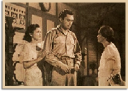

|
j
a v a s c r i p t |
November 9, 1943
Tribune: "Japanese Repulse Foe in New Guinea ... Destroy 68 Planes" — on November 6 and 7. A map shows they hit American airfields in Marawasa, near Madang, and Nadzab, ahead of Lae. We're all wondering where the Japanese were when the Americans established those bases. Commentator goes stratospheric: The "Joint Declaration" in Japan is "comparable to the Koran or the Canon Law ... a sacred code of humanity." After four days of independence celebrations in October, we'll get three more in November. A joke here says the Japanese are holding monthly celebrations because they won't be here for the annual ones.

Dawn of Freedom, 1944
Warned not to consort with American POWs during the filming of Down with the Stars and Stripes in Bataan, an officer slapped one of the boys until he admitted talking to one. Next he asked who had been passing notes, and when no one stepped forward, selected another random boy and was about to slap him around when actor Angel Esmeralda, who plays tough guy roles, stood up, said the lad was innocent and that he had passed a couple of innocent notes. After a beating and a lecture to the boys, they were warned that there'd be no mercy next time. |
|
|
|
|